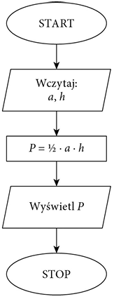
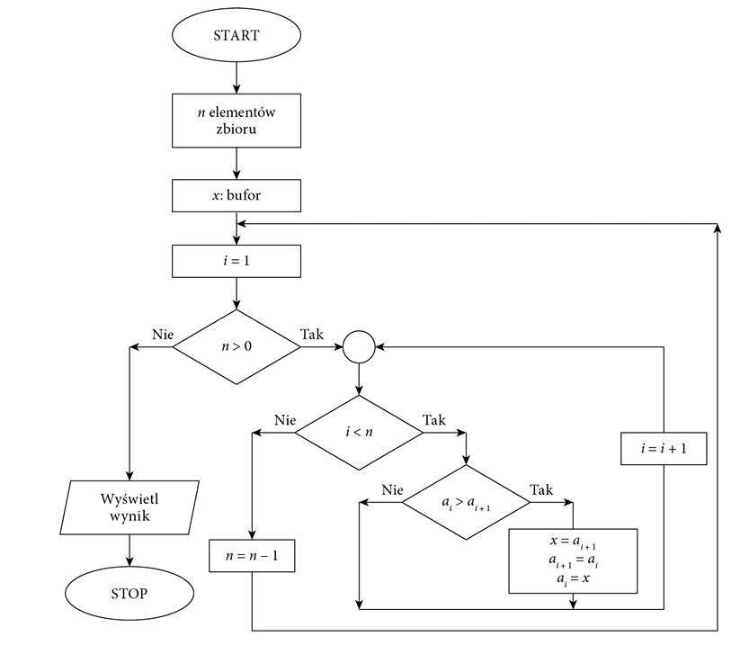
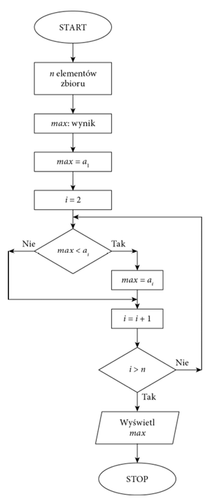

Algorytm to zestaw ściśle określonych czynności prowadzących do wykonania pewnego zadania. Określa sposób rozwiązania problemu i ma zastosowanie w różnych dziedzi nach. Języki programowania to narzędzia, które bardzo dobrze nadają się do zapisu algorytmów. Aby napisać dobry program komputerowy, należy opracować skuteczny algorytm i zdefiniować dla niego odpowiednie struktury danych. Algorytm przetwarzania danych powinien przy takim samym zbiorze danych wejścio wych zwracać zawsze taki sam wynik. Ale stanie się tak tylko w dokładnie takich sa mych warunkach i przy tych samych danych pomocniczych. Zwykle przy projektowaniu algorytmu zakłada się, że dane wejściowe są poprawne, ale bywają algorytmy, które nie tylko przetwarzają dane, lecz również je weryfikują. W rzeczywistości tak jak nie każdy problem można rozwiązać, tak nie każdą metodę rozwiązania problemu można zapisać przy użyciu algorytmu. Aby problem mógł być rozwiązany za pomocą komputera, musi zostać zapisany w postaci algorytmu. Wynika to z tego, że komputer potrafi rozwiązywać tylko problemy, dla których rozwiązanie zostanie zdefiniowane w postaci jednoznacznych kroków, czyli algorytmu. Jeżeli nie można zdefiniować rozwiązania w postaci algorytmu, nie ma możliwości rozwiązania go z wykorzystaniem komputera. Zdefiniowany algorytm może zostać zapisany w wybranym języku programowania. Ale ten sam algorytm może zostać zapisany różnie w zależności od użytego języka programowania. Zapis algorytmu w wybranym języku programowania nazywamy implementacją al gorytmu.
Jednym z podstawowych zagadnień algorytmicznych jest po rządkowanie zbioru danych według określonych jego cech. Szczególnym przypadkiem porządkowania danych jest sorto wanie liczb lub słów. Algorytmy sortowania są klasyfikowane ze względu na sposób działania, złożoność lub stabilność. Prostą metodą sortowania jest sortowanie bąbelkowe. Polega ono na porównywaniu dwóch sąsiednich elementów i zamianie ich miejscami, gdy są ustawione w nieprawidłowej kolejności. Sortowanie kończy się, gdy przy kolejnym przejściu nie ma żadnej zmiany kolejności elementów
Algorytm przedstawiający oblicznie trójkąta przedstawiony w postaci schematu blokowgo
Sposób działania algorytmu szybkiego wyszukiwania elementu w zbiorze zależy od tego, czy dane zostały uporządkowane, czy zostały zapisane w przypadkowej kolejno ści. Jeśli dane są nieuporządkowane, należy przejrzeć wszystkie elementy, aby znaleźć ten właściwy.
 Znajdowanie największego elementu w zbiorze nieuporządkowanym:
Dane: n-elementowy zbiór liczb naturalnych
Wynik: max — największa liczba znajdująca się w zbiorze
Krok 1. Przyjmij, że pierwszy element w zbio
rze jest największy, czyli max = a.
Krok 2. Dla kolejnych elementów a
, gdzie i =
2, 3, …, n, wykonaj krok 3. oraz krok 4.
Krok 3. Sprawdź, czy max jest mniejsze od a
Krok 4. Jeżeli tak, to dla max przyjmij a.